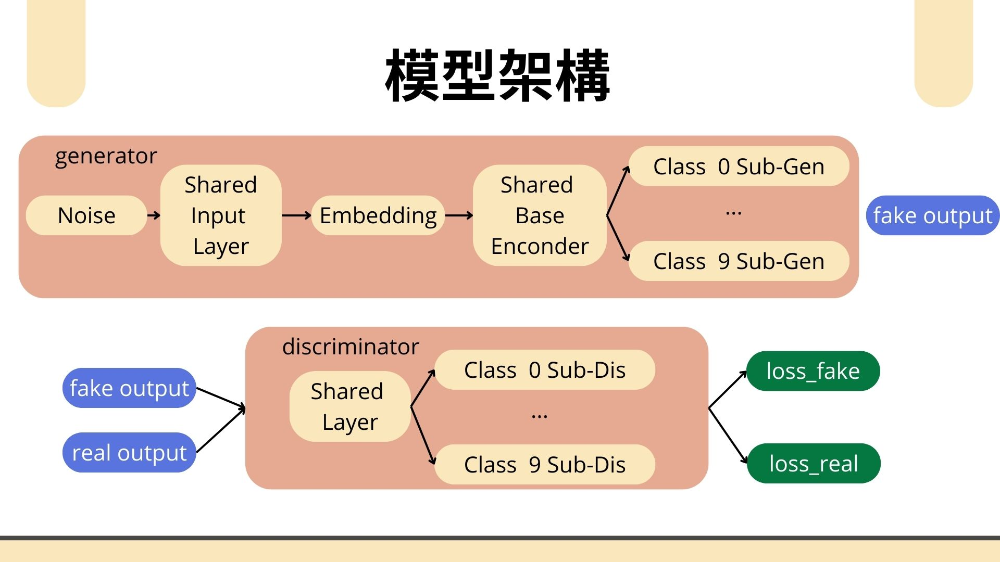
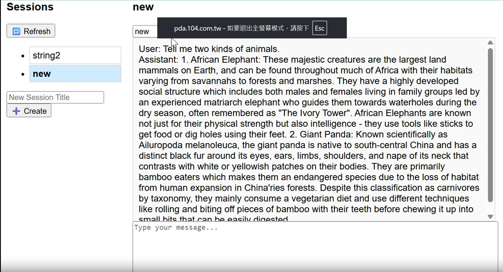
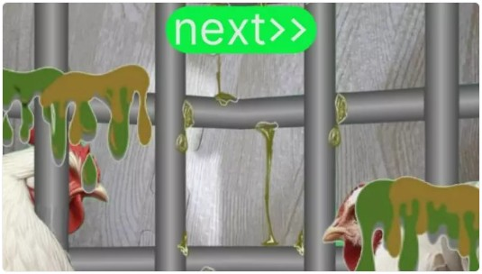
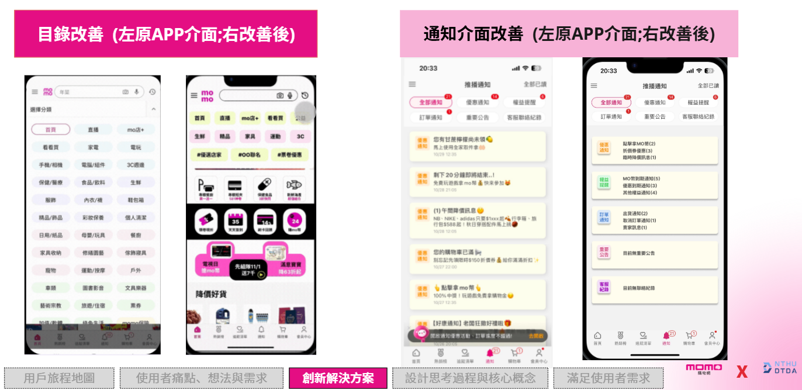

使用 Multi-Branch Conditional GAN 生成 Fashion MNIST 圖片，針對不同類別間相似度不均的問題進行優化

模型架構與技術亮點：
建立對話系統，管理 Session 與訊息資料。提供簡易 WebUI 操作介面，方便使用者互動。

使用技術：
透過 AR 工具，讓民眾更了解台灣的蛋雞現狀

重新設計介面排版，並透過問卷與使用者研究分析痛點改善成效

個人負責內容：